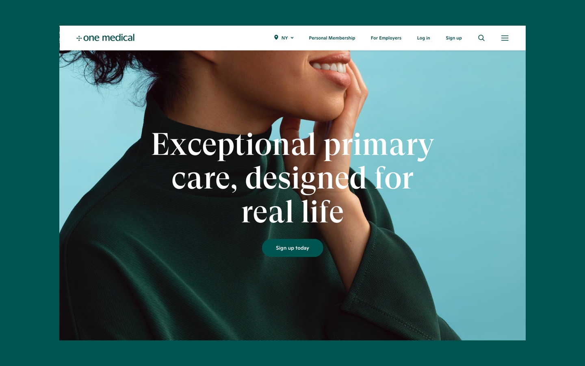
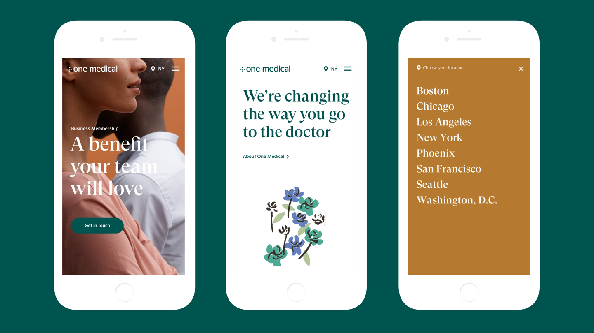
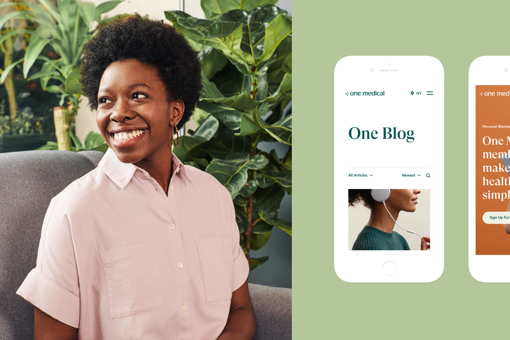
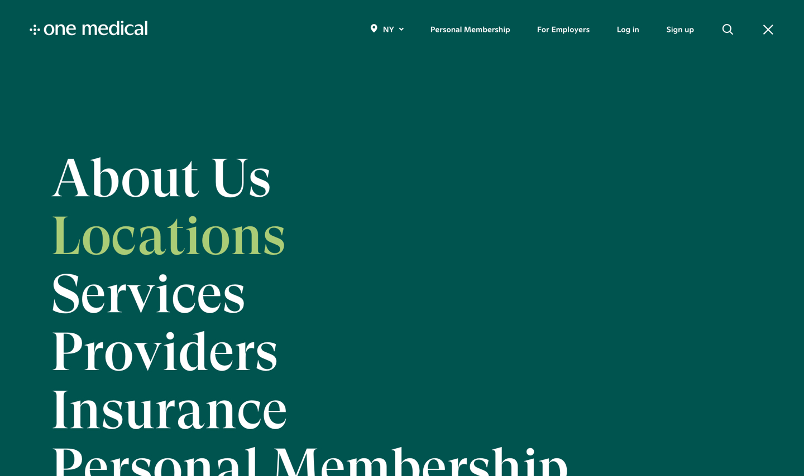

This work was completed with the amazing talent of Instrument, Portland, OR, and Moniker, San Francisco, CA. The website team consisted of Abby Noe, Arietta Tetreault, Jamie Martinez, Taryn Cowart, Scot ‘Mort’ Mortimer, Ginger Kretschmer, Daniel Ku, Michael Bunsen, J5, Kevin Haugen, Jenny James, Laka Richardson, John Brown, Paul Welch, Adam Garcia, Ellen Kong, & Jordan Lessler.
One Medical is redefining what a primary care physician means both virtually and in waiting rooms across the country. When they came to us, they needed a new website, full data migration, and new digital guidelines, all in 3 months. By creating a holistic strategy, design and development roadmap we were able to quickly elevate their product offerings before the login right to their home page. This enabled them to tell the story of their offerings in an easily updatable and extendable way.
fig5.1 · One Medical‘s newly designed website. Get in touch to see more or visit OneMedical.com ↗
After an in-depth kickoff with the One Medical team we began the design process by quickly creating multiple clickable prototypes of the mobile experience. However, instead of testing user interactions, the prototypes served as stimuli to assess unmet user needs. This qualitative information drove our content strategy as well as the IA and information hierarchy of the experience.
fig5.1 · One Medical‘s newly designed website. Get in touch to see more or visit OneMedical.com ↗
The data from our first round allowed us to focus on both swift and immersive experiences. We lifted all barriers for users who are sick and need a doctor’s appointment today. For users who were considering long term membership we provided ample content for them to research. These flows allowed us to create a simple design language and focus on technological solutions to make the design system easily expandable.
fig5.1 · One Medical‘s newly designed website. Get in touch to see more or visit OneMedical.com ↗
With a flexible page and component system created from the ground up, One Medical can now build and preview pages and workflows quickly to test content, messaging, and user interaction. We are supporting on how these components and design thinking are migrated into product in the near future.
fig5.1 · One Medical‘s newly designed website. Get in touch to see more or visit OneMedical.com ↗
As a part of the future vision work of One Medical, our team tested how the new design system can be applied to various brand touchpoints, including the One Medical mobile app. This is where the simplicity of their tool can really begin to shine, combining product innovation with brand guidelines.
fig5.1 · One Medical‘s newly designed website. Get in touch to see more or visit OneMedical.com ↗
One Medical is redefining the healthcare experience, with extremely lofty goals for expansion and market share. Although the revised site launched just weeks ago, we’re expecting big things from them in the coming year. They now have a clear value proposition, a personalized experience for all users and a world-class CMS and kit of parts to grow the site and the product into the future. During our project, we worked in close collaboration with One Medical to provide a strategic vision for both the marketing site and the product. We are iterating on new releases, and our work with One Medical continues.
For more about this project please get in touch via Linkedin ↗
For more about this project please get in touch via Linkedin ↗
2017 · Design & Direction, Work & Co.